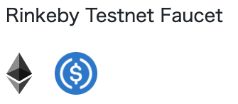
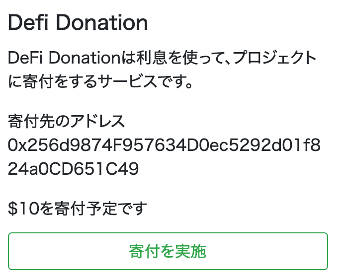

DeFi DonationはCompound（等）のDeFiから得た利息を元に寄付を行うテストサイトです
rDai等を用いない、シンプルな実装ですが、原理を理解する上で役に立つはずです
現在Rinkebyネットワーク環境のみ稼働しています
Before 1st Step : EtherやUSDCをお持ちでない方は、PROJECTSページ下部からFaucet等にて取得してください。またMetamaskの利用が前提ですので、Metamaskをインストールしてください。

1st Step : 寄付用のアカウントを作成してください。
2nd Step : デポジットをするためには、送金の許可が必要なので、送金を許可してください。
3rd Step : 利息を得るためにDeFiのプロジェクトにデポジットしてください。
4th Step : 実際に寄付をするプロジェクトにいくら寄付するか登録してください。
5th Step : 利息がたまる等して寄付ができる残高になったときには、寄付を実行してください。（利息にかかわらず、デポジットした残高から差し引かれます）

6th Step : デポジットした金額を引き出す場合は、引き出しを実施してください。寄付を登録している場合は、先に寄付の実施が必要になります。
実際で展開されるサービスにおいては、UXや手数料上の理由などで何らかの形でトランザクションの発行数が抑えられていると思いますが、シンプルに実装をするとDeFi Donationのようなフローになると考えられます
改善例1）寄付の実施は運営側が実施することで、寄付実施のトランザクションが必要なくなる -> 運営側がかなりの手数料を負担する必要が出てくる
改善例2）デポジット引き出しのタイミングで同時に寄付を実施することで、寄付実施のトランザクションが必要なくなる -> 今のところデメリットはDeFi Donationと比較してなし?
改善例3）デポジットのタイミングで、寄付の登録も同時に行う -> 今のところデメリットはDeFi Donationと比較してなし?